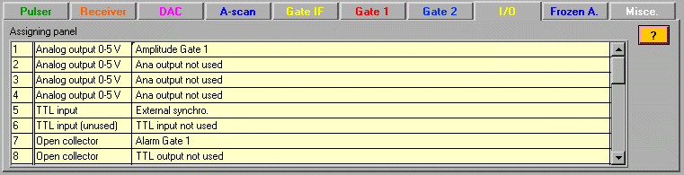
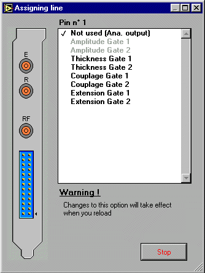
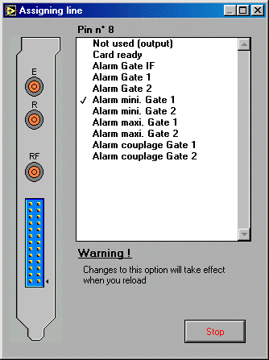

03 January 2002

(IO_picture1_us.gif)
The USPC 3100 PCI card has got a HE-10/26 pins connector
to In and Output the following datas:
-
analog signals (peak amplitude, TOF, wall thickness),
-
ON/OFF TTL signals (Flaw, TOF, wall thickness alarms)
ON/OFF alarms could be easily combined on to the same
output pin (like a logic OR).
To assign datas on the suitable pin, click
accordingly on the designation line of the pin “assigning panel”, then a
configuration window will appear with the list of suitable datas for this pin.
Example: Pin 1 should accept only analog datas: One
analogue output and only one

(IO_picture2_us.gif)
Example : pin 8 should accept only alarm datas : more
than one alarm per pin accepted (OR logic)

(IO_picture3_us.gif)
Remark : All modifications will be
confirmed after, and only after, reloading the UT file.
[Summary]